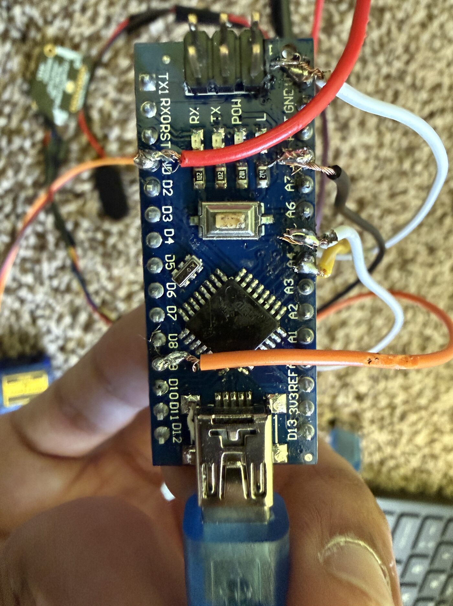
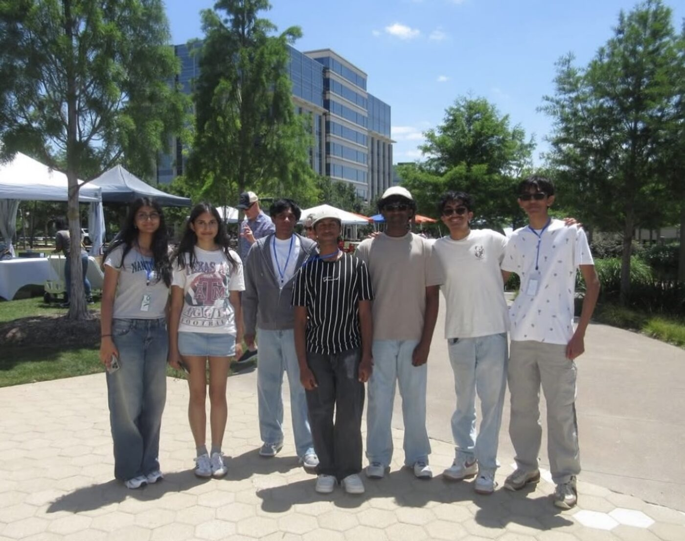

Design it,
build it,
fly it once.
I'm a high school senior in Plano, Texas, headed for aerospace engineering. Most of what I've built lives at the point where software meets hardware — a flight computer that gets exactly one chance to fire at the right moment, a glove assembly that has to hold pressure and still let a hand close around a tool.
This page is the work itself: the boards I soldered, the parts I modeled, the launches, and the one deployment that didn't work.
| School | Lebanon Trail High School — Frisco, TX |
|---|---|
| Intended major | Aerospace Engineering |
| Focus | Embedded flight software, recovery systems, CAD |
| Tools | Fusion 360, Arduino / C++, Python, 3D printing |
Competition rocket & flight computer
American Rocketry Challenge · Team member 2024–25 · Team captain 2025–26
The American Rocketry Challenge scores you on how close you fly to a target altitude and flight time, with the payload intact. After a year on the team as a member, I ran it as captain: airframe, mass trimming, recovery, and the avionics.
Instead of relying on motor ejection alone, I built an onboard flight computer to detect apogee and trigger the parachute itself. That meant writing the software, soldering the board, and proving it on the bench before it ever left the pad.
 1
2
3
4
1
2
3
4
| 1 | Nose cone |
|---|---|
| 2 | Payload section / coupler joint with vent holes |
| 3 | Body tube retention screw |
| 4 | Fin can — printed as one piece with the fins |
Flight testing ran across configurations from 470 g to 509 g on Estes F50 and AeroTech F30 and F32 motors. Each launch changed one thing — mass, motor, or recovery setup — so the next flight could be read against the last one instead of guessing at everything at once.
 1
2
3
4
1
2
3
4
| 1 | Microcontroller (Arduino Nano) |
|---|---|
| 2 | Battery & arming switch |
| 3 | DPS310 barometric pressure sensor |
| 4 | Micro servo — parachute release |
The software samples pressure in real time, converts it to altitude, runs a low-pass filter to keep sensor noise from faking an early peak, and only calls apogee once the filtered altitude has actually turned over. A safety check keeps the servo locked until the flight has genuinely started.

The chute that stayed in the tube
On one flight the parachute never came out. The temptation was to assume the code had missed apogee, which would have meant rewriting the detection logic.
Instead I checked the avionics first. The board powered through the flight, the sensor read cleanly, and the deployment command fired on time — the software had done its job. What hadn't happened was motion: the servo didn't have enough torque to pull the retainer free once the parachute was packed tight and loaded.
The failure was mechanical, not computational. Knowing that changed the fix entirely — a stronger actuator and a lower-friction retainer, not a rewrite of code that was already correct.
Lunar EVA glove assembly
NASA Texas High School Aerospace Scholars · Design Engineer, Team Foxtrot-01
Texas Aerospace Scholars takes high schoolers through a five-month online aerospace course and then brings a small group to Johnson Space Center. I was selected for the residential Base Camp as one of 62 students statewide out of 1,014 applicants.
Our mission — Moonshot — was a helmet and glove system for lunar EVAs, built to a Preliminary Design Review with a NASA consultant advising the team. As Design Engineer on a nine-person team I owned the glove: the CAD assembly and the research behind what each layer of it is actually for.


A pressure glove is a stack of layers, each solving a different problem, and the design tension is always the same: everything you add for protection is something the astronaut then has to bend a finger through.
| 1 | Bladder — holds pressure |
|---|---|
| 2 | Restraint — takes the load so the bladder doesn't balloon |
| 3 | Coil — heating element |
| 4 | Thermal — insulation and regulation |
| 5 | TMG — outer shield against dust, abrasion, micrometeoroids |

At the closing poster session we presented to NASA engineers and scientists — mission objective, lunar surface hazards, quality-of-life features, and how the design would be validated and tested.
Standing in front of people who do this professionally and being asked why you chose a material is a different exercise from writing it down. It's the part of the week I'd repeat.
Young Tech Pioneers
Vice President of Fundraising · Nonprofit teaching business and technology to K–8 students
I joined as a member in tenth grade and took over fundraising the following summer — raising money and lining up sponsors so the programs stay free for the families who show up.
The centerpiece is the Children's Business Fair. Kids research a product, build it, price it, and then stand behind a table and sell it to strangers. Across ten fairs, 200+ kids have launched a business and earned over $10,000 between them, with crowds of 150 to 200 at each one.


Behind each fair is vendor coordination, volunteers, and logistics that have to land on a specific Saturday. The part I'd keep is the one-on-one work: sitting with a middle schooler figuring out how to explain their product out loud to a stranger who might not buy it.